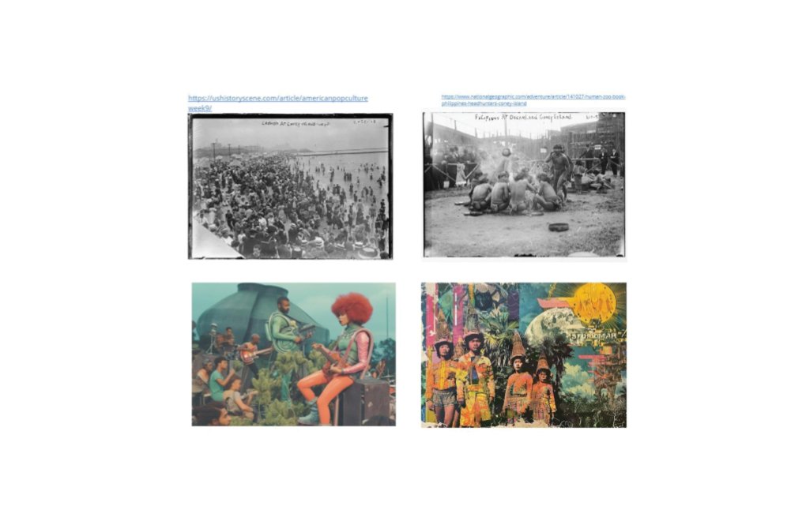

Group Members:
Leon Carranza
Akiel Allen
Arseny Pekurovsky
Process:
Recognizing common themes of erasure within our respective ethnic and cultural backgrounds in our assignment 1 projects, we sought to design a pavilion that was a hybrid between a monument and a speculative architecture.
Working backwards from concepts generated through Midjourney, our pavilion takes the form of a tensile fabric spiral, situated on the sand next to Coney Island’s boardwalk.
The experience can be broken down into three key moments:
The patterns found on the physical tiles follow the logic of a two-axis “semantic space,” such as those studied in natural language processing. These polarities are, on one end, patterns and aesthetics found in Filipino tile making and African-American textiles, and on the other, aesthetics of history and an imaginary future projected for these two practices. Each tile is generated and physically fabricated to be unique and adherent to these gradients.
Folding Semantic Space
A short animation made in Unity to demonstrate the conceptual distribution of tile patterns throughout the pavilion. Illustrates conceptually how this flat grid pattern would be turned into an enclosure.
Digital Fabrication and Generative AI
Depth Maps could be extracted from tiles made from Stable Diffusion and made into relief molds. In our project, I 3D printed these tiles, then performed a silicone cast to make several unique plaster-cement tiles.